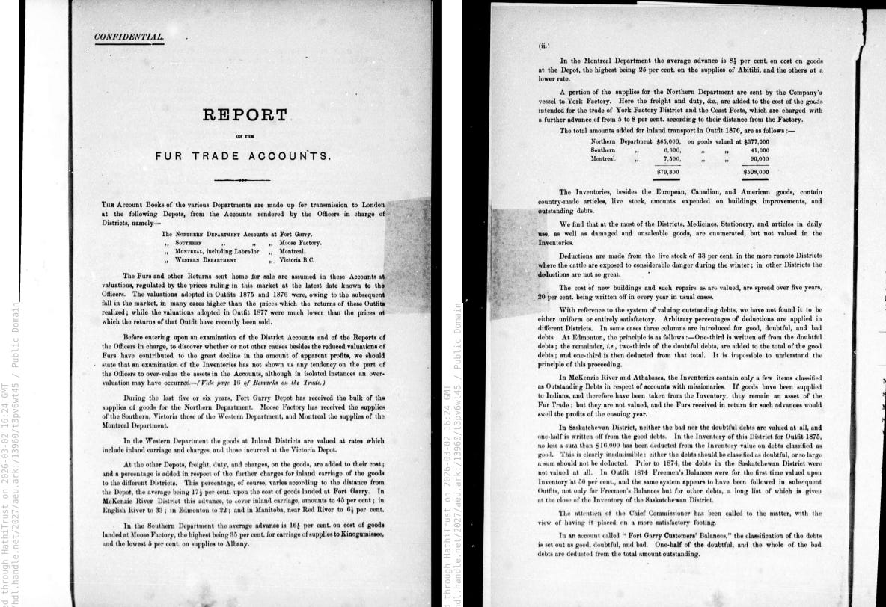
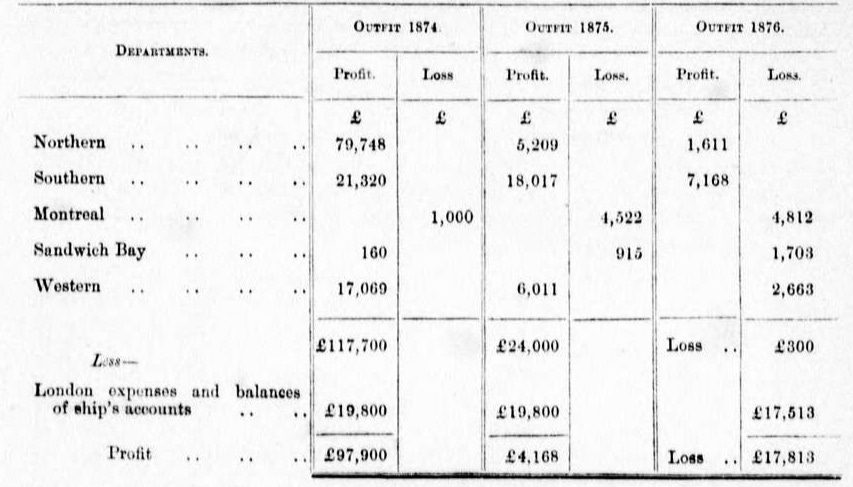
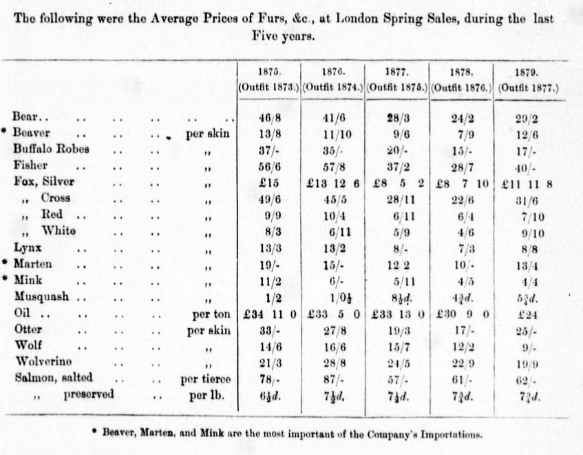
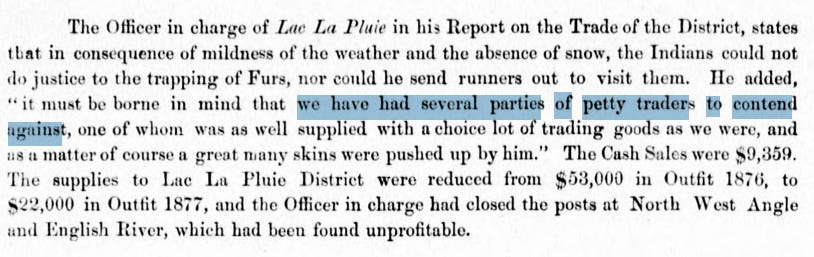

The Report on the Fur Trade Accounts, 1879
I wanted to return to something I came across earlier this year: a fur trade report from the Hudson’s Bay Company, authored in 1879. It presents us with a familiar situation, one we’ve all found ourselves in; a mountain of ledgers were analyzed by a team of HBC employees to produce a report for the board of directors to address a very common business problem: why aren’t we making as much money as we used to?
And the answer isn’t too surprising either. The reasons were complicated, with factors ranging from shifts in fashion trends, to the supply of animals, to changes in land use and ownership - all of which were affecting the trade. But you can tell that that’s not what the board wanted to hear. They wanted ‘actionable insights’, so to speak, and so everything was chalked up to a management problem. I think this report is very interesting for the things that it says, especially as it so carefully quantifies fur prices and pulls quotes from district managers to become a valuable historical document. However there’s a lot that it doesn’t say either, which is also worth noting.

The decline of the fur trade is commonly pegged to the 1830s and 40s, as fashion trends moved away from beaver hats to silk ones. Although there were plenty of remaining uses for fur, the trade was nonetheless starting to become less profitable. Add in the pressure of settlement that would push trading activity further and further away from the land’s economic centers, as well as the overlapping interests of the United States and the Crown in the western interior, and it was clear that the fur trade would not be able to stand the test of time.
The document doesn’t seem to show this, though. One might ask themselves whether or not everyone involved knew about this decline, or if they were just experiencing it as a set of ‘ongoing tensions’. At 1879, this report would’ve been conducted far beyond the heyday of the fur trade - was this something that was already understood by everyone at the Hudson’s Bay Company, or were they caught unaware? The answer is likely somewhere in between. The Londoners understood the trade was declining in relative importance, but they misidentified the phenomenon as cyclical. They thought the problem was that they’d been caught up in a few bad years (the Panic of 1873, falling prices, sloppy field management) and that the right reforms could improve their revenues. What they couldn’t see (or admit?) was that the ecological, social, and political forces that drove the decline were not going to reverse.
It’s kind of silly to analyze historical documents in a vacuum, but in my case I have a defense. A lot of this information is difficult to come across unless you have access to the Manitoba Archives (or can hire an archivist to do the research for you). Most of the records that were digitized belong to the pre-decline period, which is a bit disheartening considering how complex the unravelling was and how much could be gleaned from it about the colonial economic structures of the time.
The most relevant companions to this piece are a part of the Hudson’s Bay Company Archive. Within it, the records of the Governor and Committee of the HBC’s London office would likely have the committee minutes where this report was discussed, outgoing correspondences, and board reports; there would also be internal communications between the officers mentioned in the report, including the district reports and accounts that the investigators were examining. Unfortunately, I cannot access these because they are only available in person, but they do exist if anyone would like to go on a field trip.
Before we get into the document itself, it would be helpful to set the scene. The Hudson’s Bay Company was originally charted by King Charles II in 1670 to fulfill a triple mandate: “to seek a northwest passage to the Pacific, to occupy the lands adjacent to Hudson Bay, and to carry on any commerce with those lands that might prove profitable”1. In fact, it granted the company exclusive trading rights over all land whose rivers drained into Hudson Bay, a territory called Rupert’s Land that encompassed roughly a third of what we know as Canada today. It was a governing entity as much as it was a business, involved in managing relations with Indigenous peoples, setting prices for furs, and operating a network of posts spanning the subarctic coast deep into the interior. After absorbing its rival, the North West Company, in 1821, the HBC under Governor George Simpson consolidated its hold over nearly all of British North America’s fur trade for the next four decades.
Although the land was the Company’s greatest asset, it eventually became a site of contestation as both Canada and America had their eyes on westward expansion. On the Canadian side, expansionists portrayed the HBC as an impediment to the country’s growth and claimed that the Company had intentionally portrayed the Northwest as a barren, inhospitable territory to deter any interest in settlement. Following this,the British Parliament held hearings in 1857 questioning whether a commercial monopoly should continue to control such a vast territory. In 1859,the company’s exclusive trading license was not renewed, allowing independent traders to enterthe market.
It was in this context that a London investment syndicate called the International Financial Society acquired controlling interest inthe HBC in 1863. It should be noted thatthe new shareholders were “less interested inthe fur trade than in real estate speculation and economic development inthe West”, signifying a shift inthe Company’s priorities2. The syndicate reorganizedthe HBC under a new set of officers, increased its capitalization, and issued stock tothe public, withthe promise that great profits were to be earned from selling land to settlers moving into western Canada.
One can see this bureaucratic shift by looking at the signatories of the report: George J. Goschen, John Rose, and Edward Hamilton. Goschen, who signed this report as Governor of the Hudson’s Bay Company, was a former director of the Bank of England and a Liberal MP who had served in the cabinet as First Lord of the Admiralty. He took the HBC governorship in 1874 after losing his government position, having been connected through the IFS. Sir John Rose was even more remarkable: he had been Canada’s first federal minister of finance under John A. Macdonald, was the HBC’s legal counsel in Canada, and by the late 1860s had relocated to London to become a merchant banker. He later served as deputy governor of the Hudson’s Bay Company from 1880 to 1883.
The authors, then, were not members of the fur trade, but financiers and politicians. They were hardly acquainted with the posts themselves, much less the day-to-day activity of hauling furs onto canoes and York boats, but they didn’t need to be, either. For them, the fur trade represented a set of business operations that needed to be put into order; however the most consequential decisions had already taken place by the time this report was pulled together. In 1869-70, the HBC surrendered Rupert’s Land to the newly formed Dominion of Canada in exchange for £300,000 and the right to retain one-twentieth of the land in the prairies. The company had made the shift from being a quasi-sovereign power to a commercial enterprise - and it was within this new, financialized identity that it commissioned the report on the fur trade accounts.

The above is a table of profits and losses across the departments over the years. An ‘outfit’ refers to an annual shipping cycle, much like a company’s fiscal year. We can see that there’s a drastic decline in profits across its departments, losing over £100,000 in just 2 years. A major factor contributing to this was a delay in adjusting to the European market crash. Officers in the field continued to value their collected furs at outdated, higher prices, effectively masking the real losses. Conversely, by 1877, they were undervaluing the furs just as the market finally began to recover; and this is noted here too.
The investigators heavily criticized post officers for trading too many European goods for too few furs. Because communication with remote posts took a long time - statistics on goods traded at interior posts had to be compiled, shipped to the depots, and then matched against sale prices from the European markets - prices remained high even after fur values dropped. Officers were often more terrified of losing their traditional fur volumes to competitors than they were of operating at a financial loss. The committee also discovered that the methods used to value assets, debts, and depreciation were highly inconsistent. For example, bad and doubtful debts were calculated and written off using completely different formulas depending on the district. Furthermore, ships and steamers were being depreciated based on their continually reduced valuations, artificially inflating their value on the Company’s books.
Transporting goods across the Canadian interior - both the furs as well as necessary provisions for the people living in remote trading posts - also added massive markups to the base cost of goods. For instance, inland transport added an average of 17.5% to the cost of goods at Fort Garry, and up to 40% in the McKenzie River District; the large amount of capital tied up in slow-moving inventories and transport severely hampered the Company’s overall profitability.

One of the things that wasn’t mentioned in the report was that the Plains bison population was massively overhunted by the 1870s, resulting in a glut of hides. If we look at the bison robes in this price table (listed as “Buffalo Robes”), we can see that the price had dropped from 37 shillings in 1875 to 17 shillings in 1879. The southern herd had been effectively destroyed by hunters at this point and the northern herd was thinning out too.
The consequences of this stretched beyond the markets; the fur trade’s inland transportation network depended on pemmican (a mixture of dried buffalo meat and fat, and sometimes berries), which was a staple in the sacks of voyageurs and traders making long canoe trips. Frits Pannekoek notes that by the 1840s, the Company as a whole required about a hundred thousand pounds of pemmican each year, and by 1870 that figure had nearly doubled3. As the herds disappeared, the ability to supply these provisions became constrained, making it even more difficult for posts to operate in the interior.
Perhaps the most important context the document almost entirely suppresses is the economic agency of Indigenous peoples during this period. Passages like this one from the Lac La Pluie officer about Indigenous trappers refusing to accept lower tariffs and taking their furs to competing traders are glimpses of a much larger story:

By the 1870s many Indigenous nations across the Northwest were engaged in sophisticated negotiations with both the HBC and the Canadian government about their involvement in the fur trade. Treaties 1 through 7 were signed between 1871 and 1877, and they fundamentally altered the political relationship between Indigenous peoples and the Hudson’s Bay Company. The HBC’s internal documents treat this almost entirely as a logistical problem to navigate, but they were in fact losing much of their territorial leverage.
For instance, one of the things this impacted was credit. Traders had long extended goods on credit to Indigenous trappers before the hunting season, with the expectation that they would be repaid in furs. It should be noted that the trappers were much more dependent on these goods (usually metal implements, firearms, and textiles) than the HBC was on their furs, but the HBC’s traders were bound in their own way; traders who refused to extend credit risked losing the relationship to a competitor who would. By the 1870s however, the HBC was in serious competition with non-Company traders in a bid to keep their foothold in the market, so Indigenous trappers had much more optionality and could take their furs to whoever offered the best terms.
Another thing that gets a very small mention but is nonetheless significant is the construction of the Canadian Pacific Railway. By 1879 it was becoming clear that the railway would cut directly through HBC territory, but it was hard for them to accurately predict what would happen as a result. The Thompson’s River district officer believed that the railway would benefit the settlement, but this reads very differently knowing that its construction ended up shifting Canadian economic activity away from fur trading and towards agricultural and industrial development.
To sum everything up, we can look at five events that this document is entangled with, two that are apparent and three not so much: global price decline, political transformation, ecological contraction, Indigenous autonomy, and technological change. The authors saw all of this as a management problem, coming to the conclusion that tariffs were set too high, the officers needed to watch their expense ratios, and that the accounting systems need to be overhauled. These recommendations were implemented for the most part, but not as a result of this report.
Coincidentally, Charles John Brydges noted many of the same concerns as Goschen and co. - such as the disorganization of the fur trade accounts - in his letters from Manitoba in 1879, around the same time this report was being written. Brydges was a former railway manager before becoming the HBC’s Land Commissioner, and was sent to Winnipeg to modernize the Company’s operations in Canada. He quickly got to work building new administrative structures, drawing up new contracts for supplies to Indigenous peoples, and taking over the supervision of transport networks; it was a complete overhaul. For a brief period in the early 1880s, it seemed to have worked. A land boom in Western Canada brought the HBC enormous revenues from its retained prairie acreage, and the construction of the Canadian Pacific Railway - in which John Rose and his banking firm were directly involved - opened up new commercial possibilities. The fur trade even showed modest improvement as prices recovered across the pond.
However, this was short-lived. The land boom collapsed in 1882. The construction of the railway was also seen by HBC officers as a way to bring more customers to their posts, but it actually increased settlement and introduced competition, eventually making the old trading post model obsolete. The bison herds that had sustained both the robe trade and the provisioning system were gone by the mid-1880s. Indigenous communities, now bound by treaties with the Canadian state, no longer negotiated with the HBC the way that they used to. The fur trade continued, but it shrank steadily as a share of the Company’s business. By the Second World War, the Hudson’s Bay Company only controlled about a quarter of the Canadian fur trade, which was a far cry from the monopoly it once had. In January 1991, it exited the fur trade entirely, 321 years after it was chartered.
This document contains a lot of tension; I hope you can see why I find it so fascinating. It was produced during a period of significant social, cultural, and political change and yet doesn’t reflect any of this. The tone is strictly bureaucratic, and its proposed solutions are quite practical. Even if demand was lower than ever, the business was still in operation - what were the trappers, traders, and officers supposed to do about the changing settlement patterns? There’s a lot to say when a company is doing well, and people love to hear about how it was built and how it beat the odds in some way, but declining businesses can also be interesting to read about; Enron comes to mind. In addition to the drama and intrigue, it certainly hits an existential nerve, where the dislodging of these huge apparatuses reminds us that everything is subject to change. So, too, are we reminded of life’s impermanence.
- The Editors of Encyclopaedia Britannica, “Hudson’s Bay Company,” Encyclopedia Britannica, June 17, 2026, https://www.britannica.com/money/Hudsons-Bay-Company. ↩
- “Hudson’s Bay Company,” The Canadian Encyclopedia, accessed July 31, 2026, https://thecanadianencyclopedia.ca/en/article/hudsons-bay-company. ↩
- Frits Pannekoek, The Fur Trade and Western Canadian Society 1670-1870, vol. 43, ed. Terry Cook and Gabrielle Blais, Canadian Historical Association Historical Booklet (The Canadian Historical Association, 1987), 19. ↩